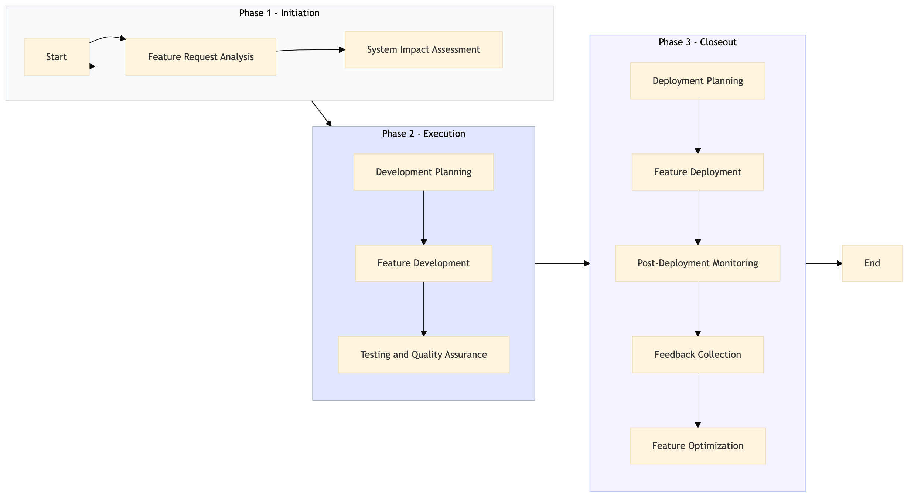

| Role | Steps |
|---|---|
| Digital Experience Manager | 1.1 3.4 |
| IT Manager | 1.2 2.1 3.1 3.2 3.3 |
| Software Developer | 2.2 2.3 3.5 |
| QA Engineer | 2.4 |
| Step | Name | Role | System | Input | Output | KPI | Dec? | Exc? | Pain Point / Risk |
|---|---|---|---|---|---|---|---|---|---|
| 1.1 | Feature Request Analysis | Digital Experience Manager | Oracle OPERA Cloud | Feature request document | Feature analysis report | Less than 24 hours | Y | N | Complexity in aligning with existing hotel systems and processes. |
| 1.2 | System Impact Assessment | IT Manager | Oracle OPERA Cloud, IDeaS G3 RMS | Feature analysis report | System impact assessment report | Less than 48 hours | Y | N | Ensuring compatibility with multiple systems and minimizing downtime. |
| 2.1 | Development Planning | Software Developer | Oracle OPERA Cloud, SynXis CRS | System impact assessment report | Development plan and timeline | Less than 7 days | N | Y | Resource allocation and prioritization of development tasks. |
| 2.2 | Feature Development | Software Developer | Oracle OPERA Cloud, SynXis CRS | Development plan and timeline | Developed feature code | Less than 3 weeks | N | Y | Debugging and testing to ensure functionality across different devices and platforms. |
| 2.3 | Testing and Quality Assurance | QA Engineer | Oracle OPERA Cloud, SynXis CRS | Developed feature code | Test results and bug reports | Less than 1 week | Y | N | Identifying and resolving bugs without disrupting existing guest app functionalities. |
| 3.1 | Deployment Planning | IT Manager | Oracle OPERA Cloud, SynXis CRS | Test results and bug reports | Deployment plan and schedule | Less than 2 days | N | Y | Coordinating deployment with minimal impact on guest app availability. |
| 3.2 | Feature Deployment | IT Manager | Oracle OPERA Cloud, SynXis CRS | Deployment plan and schedule | Deployed feature in guest app | Less than 6 hours | N | Y | Rolling back changes if issues arise during deployment. |
| 3.3 | Post-Deployment Monitoring | IT Manager | Oracle OPERA Cloud, SynXis CRS | Deployed feature in guest app | Monitoring report and issue logs | Continuous monitoring for 24 hours post-deployment | Y | N | Detecting and addressing any issues that arise immediately after deployment. |
| 3.4 | Feedback Collection | Digital Experience Manager | Oracle OPERA Cloud, SynXis CRS | Monitoring report and issue logs | Guest feedback and analysis | Less than 1 week | Y | N | Gathering meaningful feedback to improve future updates. |
| 3.5 | Feature Optimization | Software Developer | Oracle OPERA Cloud, SynXis CRS | Guest feedback and analysis | Optimized feature code | Less than 2 weeks | N | Y | Balancing guest satisfaction with system performance improvements. |
Manage guest app functionalities and updates at a Marriott full-service hotel to enhance digital guest experience.